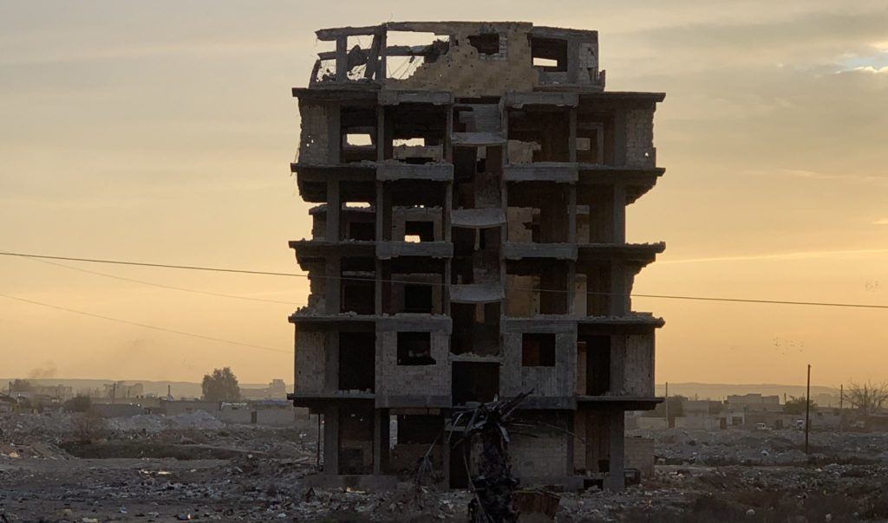

国际特赦组织与空中战争组织近日启动一个新的数据项目，要求美国领导的联军必须停止否认近两年来在叙利亚城市拉卡造成的大规模平民死亡与破坏。该项目调查有关联军在驱逐自称“伊斯兰国”的武装团体时所发动的攻势。
这个互动网站名为《巧辩与现实：“历史上最精确的空袭行动”如何让拉卡成为近代受破坏最严重的城市》，是有关当代冲突中平民死亡情况的最全面调查。经过近两年的调查和资料整理，网站描述了2017年6至10月期间，联军在拉卡进行的军事行动中，美英法三国发动的数以千计空袭及美国数以万计的炮袭，如何直接导致1,600多名平民失去性命。
美国领导的联军开始发动攻势时，伊斯兰国已统治拉卡近4年，这个武装团体期间犯下了各种战争罪及危害人类罪，折磨和杀害任何胆敢反对其统治的人。国际特赦组织之前曾纪录过伊斯兰国如何利用平民作为人肉盾牌，在撤离路线埋下地雷，建立检查站以限制人员流动，以及向尝试逃离的人开火。
“数以千计的平民在美国领导的联军发动攻势将伊斯兰国逐出拉卡的行动中丧生或受伤。伊斯兰国的狙击手及其埋下的地雷将拉卡变成死亡陷阱。不少空中轰炸的精确度不高，数以万计的炮袭肆意攻击各地，因此不难理解为何会有数以百计的平民伤亡，”国际特赦组织危机应对高级顾问唐娜提拉·罗维拉（Donatella Rovera）说。


叙利亚，拉卡。©Amnesty International
“联军将拉卡夷为平地，但无法抹煞真相。国际特赦组织与空中战争组织呼吁联军停止否认他们在拉卡发动攻势时所造成的平民丧生与破坏规模惊人。”
“联军需要全面调查在拉卡的行动究竟出了什么问题，然后吸取教训，以避免在未来的军事行动中再对被卷入其中的平民造成巨大痛苦，”空中战争组织负责人克里斯·伍兹（Chris Woods）说。
在拉卡当地及以外地区进行尖端研究
国际特赦组织与空中战争组织已就此项调查整理和参照了多个数据流。
在战事仍在激烈进行期间，国际特赦组织研究员4次到访拉卡，在当地花了约整整两个月的时间，调查超过200个空袭地点，并会见400多名目击者及幸存者。
逾11,000栋建筑在拉卡之战中受摧毁。©Mapbox, ©OpenStreetMap; Data: UNITAR – UNOSAT.
国际特赦组织创新的“空袭追踪者”（Strike Trackers）项目也查明了拉卡逾11,000栋受破坏的建筑中，每一栋被击中的时间。超过3,000名数字活动人士在124个国家参与项目，分析两百多万张卫星图像帧。国际特赦组织的数字核查团（Digital Verification Corps）设在全球6所大学里，在战事进行期间分析并验证了所拍摄到的视频片段。
空中战争组织与国际特赦组织的研究员实时和在战事后分析开源证据，包括数以千计的社交媒体帖文和其他材料，以建立数据库，里面有1,600多名据报于联军空袭中丧生的平民的信息。二者搜集了逾千名受害者的姓名；国际特赦组织已在拉卡核实了当中641人的信息，而针对其余受害者也有多个消息来源的报道作为有力的证明。
两个组织经常与美国领导的联军以及美英法三国政府分享调查结果，联军亦因此承认要为159名（占报告总人数约10%）平民死亡负责，但却以证据“不可信”为由拒绝就其余受害者承担责任。迄今为止，联军一直没有对平民伤亡报告进行适当调查，也没有会见目击者与幸存者，并承认他们没有进行实地调查。
将受害者的故事活生生地呈現眼前
《巧辩与现实》通过带领用户穿过市内各处；认识幸存者；听他们讲述证词，以及访问他们被毁的房子，将经历战事并在战事中丧生的家庭的故事活生生地呈現眼前。在拉卡，横跨幼发拉底河的桥被炸毀，中心体育场附近的旧城区大部分被摧毁，所有地方无一幸免。
这个与Holoscribe的创意团队一同建立的互动网站包含各种照片、视频、360度如身临其境的体验、卫星图像、地图及数据动态效果，以凸显各起个案，以及在联军炮击之下平民的经历。用户也可以查看被杀平民的信息，其中不少人在市内颠沛流离地过活。
全市大楼夷为平地
联军不间断地以密集火力进攻，当他们在靠近平民的地区使用这些不精确的军火弹药时，已达到狂轰滥炸的地步，因此拉卡的平民死亡人数飙升一点也不让人意外。
一名美军人员吹嘘自己在行动期间发射了约30,000枚炮弹，相当于连续4个月不间断地每6分钟发动一次进攻，所用的大炮数量超过了越南战争以来任何冲突中使用的数目。由于误差超过100公尺，这些无制导大炮的落点极不准确，而在人口密集的地区使用构成滥袭行为。
其中一个最早成为攻击目标的地方德拉雅（Dara’iya）在拉卡西部，是一个建筑不高和较为穷困的地区。
法蒂玛（Fatima）在一所破烂不堪、半毁坏的房子里，描述当联军在2017年6月10日早上向她所住的社区投下大量炮弹时，当时9岁的她怎样失去3个兄弟姐妹和母亲阿吉扎（Aziza），他们也是当日在街上丧生的16名平民之一。法蒂玛失去了右腿，左腿也严重受伤。她现在使用由非政府组织捐助的轮椅代步，而她唯一的心愿是上学去。
家人亲属瞬间灭绝
美英法部队也向平民街区发动数以千计的空袭，当中数十次的空袭造成大量平民伤亡。
在其中一起惨烈的事件中，联军在2017年9月25日傍晚的空袭摧毁了位于哈拉特巴杜区（Harat al-Badu）中心马里（Maari）学校附近一栋5层高住宅建筑，当时有4个家庭隐匿于地下室内。几乎所有人丧生，包括至少32名平民，其中20人是小孩。一周后，一栋邻近的建筑被空袭摧毁，再多27名平民丧生，当中不少人是之前一次空袭中被杀者的亲属。
幸存者阿亚特 飞机在轰炸，一日24小时不停落下火箭，而且到处都是伊斯兰国的狙击手，你根本无法呼吸。
“飞机在轰炸，一日24小时不停落下火箭，而且到处都是伊斯兰国的狙击手，你根本无法呼吸，”9月25日空袭的幸存者阿亚特·穆罕默德·贾西姆（Ayat Mohammed Jasem）一年后返回被毁家园时对电视摄制组说。
“我亲眼看见自己的儿子在瓦砾中烧死，我失去了所有最爱的人，我的4个孩子、丈夫、母亲、姐妹、我的整个家庭。他们的目标不是解救平民吗？他们本来应该拯救我们，救我们的孩子。”
2019年1月23日，拉卡。©Andrea DiCenzo/Panos
是时候追究责任
在国际特赦组织记录到的个案中，不少很可能构成违反国际人道法的行为，有理由进行进一步调查。
尽管国际特赦组织与空中战争组织等非政府组织尽了最大努力，但永远不会有全面调查拉卡市内平民伤亡情况所需的资源。国际特赦组织与空中战争组织敦促美国领导的联军成员制定独立而公正的机制，以便能有效、迅速地调查平民受伤害的报告，包括违反国际人道法的行为，并公开调查结果。
发动空袭的联军成员，特别是美英法三国，必须就其使用的战术、具体手段、袭击方式、目标选择以及在计划与执行攻击时采取的预防措施保持透明度。
联军成员必须成立基金，以确保受害者及其家属获得全面补偿与赔偿。